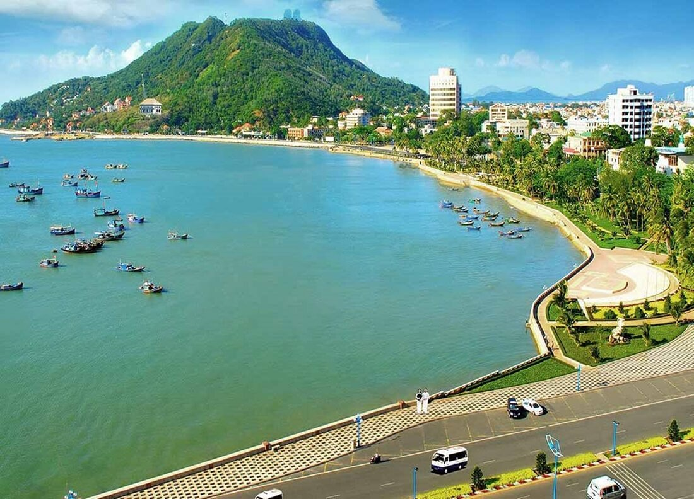
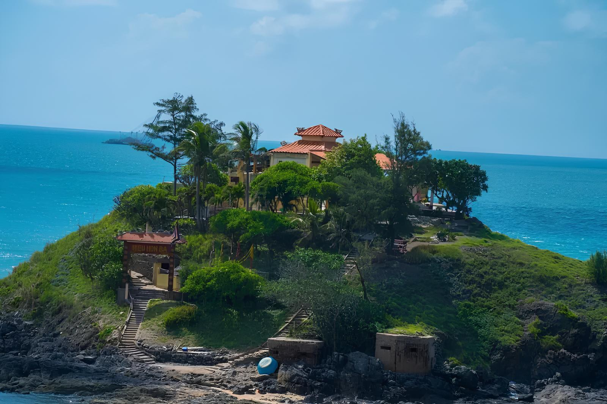
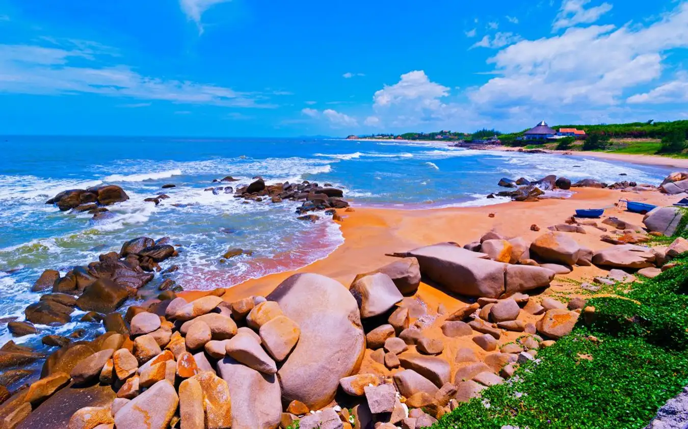
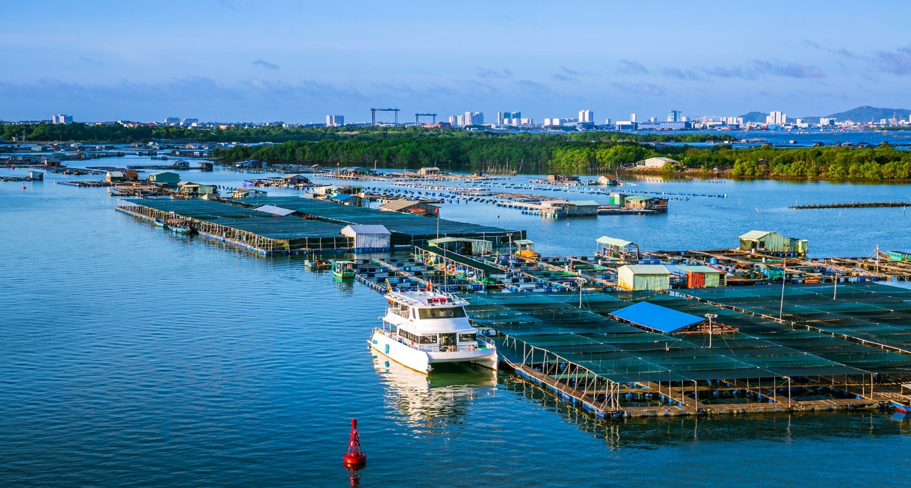
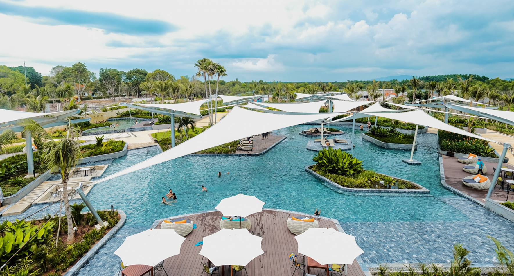
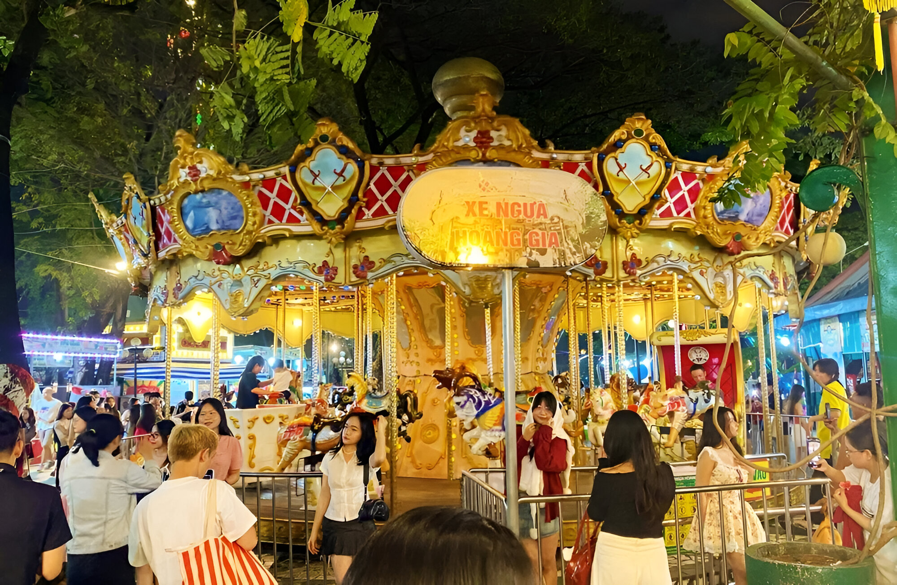

🗺️ Chọn điểm đến:
1. Tượng Chúa Kitô Vua

Tượng Chúa Kitô Vua nhìn từ xa
Giới thiệu chung
Tượng Chúa Kitô Vua là một trong những biểu tượng nổi tiếng nhất của thành phố Vũng Tàu. Tọa lạc trên đỉnh núi Nhỏ cao 170m so với mực nước biển, tượng có chiều cao 32m với hai cánh tay dang rộng 18,4m, được xây dựng từ năm 1974.
Điểm đặc biệt
- Kiến trúc độc đáo: Tượng cao 32m, đứng thứ 2 thế giới về tượng Chúa Kitô cao nhất
- View 360 độ: Ngắm toàn cảnh thành phố và biển cả bao la
- Hành trình leo núi: 847 bậc thang dẫn lên đỉnh
- Hoàng hôn tuyệt đẹp: Thời điểm đẹp nhất để chụp ảnh
Thông tin tham quan
📍 Địa chỉ: Núi Nhỏ, Phường 8, TP. Vũng Tàu
🕐 Giờ mở cửa: 7:00 - 17:00 hàng ngày
💰 Giá vé: Miễn phí
⏱️ Thời gian tham quan: 1.5 - 2.5 giờ
2. Ngọn Hải Đăng

Ngọn Hải Đăng cổ kính trên núi Nhỏ
Giới thiệu chung
Ngọn Hải Đăng Vũng Tàu được xây dựng từ năm 1910, là một trong những hải đăng cổ nhất Đông Nam Á. Tọa lạc trên đỉnh núi Nhỏ, cao 18m, hải đăng vẫn đang hoạt động và là địa điểm du lịch hấp dẫn.
Điểm đặc biệt
- Lịch sử lâu đời: Được xây dựng từ thời Pháp thuộc (1910)
- Kiến trúc cổ điển: Phong cách kiến trúc Pháp độc đáo
- View hoàng hôn: Điểm ngắm hoàng hôn đẹp nhất Vũng Tàu
- Check-in lý tưởng: Background cực đẹp cho ảnh du lịch
Thông tin tham quan
📍 Địa chỉ: Núi Nhỏ, Phường 2, TP. Vũng Tàu
🕐 Giờ mở cửa: 7:00 - 18:00 hàng ngày
💰 Giá vé: 10.000đ/người
⏱️ Thời gian tham quan: 1 - 1.5 giờ
3. Bãi Sau (Thùy Vân)

Bãi Sau - Bãi biển dài và phẳng lặng
Giới thiệu chung
Bãi Sau hay còn gọi là bãi Thùy Vân, là bãi biển dài nhất Vũng Tàu với chiều dài khoảng 10km. Bờ biển phẳng lặng, cát trắng mịn, là nơi lý tưởng để tắm biển và nghỉ dưỡng.
Điểm đặc biệt
- Bãi biển dài nhất: Kéo dài 10km dọc ven biển
- Sóng êm ái: Thích hợp cho gia đình có trẻ nhỏ
- Nhiều resort: Hệ thống khách sạn, resort cao cấp
- Hoạt động thể thao: Lướt ván, môtô nước, dù bay
Thông tin tham quan
📍 Địa chỉ: Đường Thùy Vân, TP. Vũng Tàu
🕐 Giờ mở cửa: Cả ngày
💰 Giá vé: Miễn phí
⏱️ Thời gian tham quan: 2 - 4 giờ
4. Bãi Trước (Mulberry Beach)

Bãi Trước - Bãi biển đẹp nhất Vũng Tàu
Giới thiệu chung
Bãi Trước được mệnh danh là bãi biển đẹp nhất Vũng Tàu với nước biển trong xanh, cát trắng mịn và hàng cây xanh mát ven bờ. Đây là nơi lý tưởng để tắm biển và thư giãn.
Điểm đặc biệt
- Nước trong xanh: Chất lượng nước tốt nhất Vũng Tàu
- Cát trắng mịn: Mềm mại, sạch sẽ
- Cây xanh mát: Hàng cây dầu bóng mát ven biển
- Nhiều dịch vụ: Nhà hàng, quán café view biển
Thông tin tham quan
📍 Địa chỉ: Đường Quang Trung, TP. Vũng Tàu
🕐 Giờ mở cửa: Cả ngày
💰 Giá vé: Miễn phí
⏱️ Thời gian tham quan: 2 - 3 giờ
5. Hòn Bà (Bãi Dứa)

Hòn Bà - Bãi biển hoang sơ, yên bình
Giới thiệu chung
Hòn Bà hay Bãi Dứa là điểm đến hoang sơ, yên tĩnh dành cho những ai muốn tìm kiếm không gian riêng tư xa rời sự ồn ào của thành phố. Bãi biển còn rất nguyên sơ.
Điểm đặc biệt
- Hoang sơ tự nhiên: Ít bị khai thác du lịch
- Yên tĩnh: Ít du khách, không gian riêng tư
- Nước trong xanh: Chất lượng nước tuyệt vời
- Đá tảng độc đáo: Phong cảnh thiên nhiên đẹp
Thông tin tham quan
📍 Địa chỉ: Phường Nguyễn An Ninh, TP. Vũng Tàu
🕐 Giờ mở cửa: Cả ngày
💰 Giá vé: Miễn phí
⏱️ Thời gian tham quan: 2 - 3 giờ
6. Biển Long Hải

Biển Long Hải - Bãi biển hoang sơ, ít người
Giới thiệu chung
Biển Long Hải thuộc huyện Long Điền, cách trung tâm Vũng Tàu khoảng 20km. Đây là bãi biển hoang sơ với nước trong xanh, ít du khách, lý tưởng cho nghỉ dưỡng.
Điểm đặc biệt
- Hoang sơ: Chưa bị khai thác du lịch quá mức
- Nước trong: Rất sạch và trong xanh
- Ít người: Yên tĩnh, thích hợp nghỉ dưỡng
- Giá rẻ: Chi phí ăn uống, lưu trú hợp lý
Thông tin tham quan
📍 Địa chỉ: Huyện Long Điền, Bà Rịa - Vũng Tàu
🕐 Giờ mở cửa: Cả ngày
💰 Giá vé: Miễn phí
⏱️ Thời gian tham quan: Nửa ngày - 1 ngày
7. Làng Bè Long Sơn

Làng Bè - Vựa hải sản tươi sống
Giới thiệu chung
Làng Bè Long Sơn là vựa hải sản tươi sống nổi tiếng của Vũng Tàu. Du khách có thể trải nghiệm đời sống ngư dân chân thật và thưởng thức hải sản tươi ngon.
Điểm đặc biệt
- Hải sản tươi sống: Đa dạng, giá rẻ
- Trải nghiệm văn hóa: Đời sống ngư dân chân thật
- Chụp ảnh đẹp: Bè cá, thuyền đánh cá
- Mua hải sản: Mang về làm quà
Thông tin tham quan
📍 Địa chỉ: Phường Long Sơn, TP. Vũng Tàu
🕐 Giờ mở cửa: Sáng sớm 5:00 - 10:00 (tốt nhất)
💰 Giá vé: Miễn phí (chỉ trả tiền hải sản)
⏱️ Thời gian tham quan: 1 - 2 giờ
8. Suối Nước Nóng Minera Bình Châu

Suối nước nóng - Thư giãn trong không gian xanh mát
Giới thiệu chung
Suối Nước Nóng Minera Bình Châu nằm trong khu du lịch sinh thái, cách Vũng Tàu khoảng 60km. Nơi đây có suối nước nóng tự nhiên 82°C, khoáng chất tốt cho sức khỏe.
Điểm đặc biệt
- Nước khoáng nóng: Nhiệt độ 82°C, giàu khoáng chất
- Tắm bùn khoáng: Dịch vụ spa tự nhiên
- Rừng nhiệt đới: Không gian xanh mát
- Resort nghỉ dưỡng: Tiện nghi đầy đủ
Thông tin tham quan
📍 Địa chỉ: Xã Bình Châu, huyện Xuyên Mộc, BR-VT
🕐 Giờ mở cửa: 7:00 - 17:00 hàng ngày
💰 Giá vé: 120.000đ - 200.000đ/người
⏱️ Thời gian tham quan: Nửa ngày - 1 ngày
9. Công Viên Thỏ Trắng

Công Viên Thỏ Trắng - Điểm vui chơi cho gia đình
Giới thiệu chung
Công Viên Thỏ Trắng là điểm vui chơi lý tưởng cho gia đình có trẻ nhỏ. Công viên có không gian xanh mát, nhiều trò chơi và động vật dễ thương.
Điểm đặc biệt
- Thích hợp trẻ em: Nhiều trò chơi an toàn
- Động vật dễ thương: Thỏ, nai, dê...
- Không gian xanh: Cây cối, hoa lá
- Giá rẻ: Phù hợp mọi gia đình
Thông tin tham quan
📍 Địa chỉ: Đường Thi Sách, Phường 2, TP. Vũng Tàu
🕐 Giờ mở cửa: 7:00 - 18:00 hàng ngày
💰 Giá vé: 20.000đ - 30.000đ/người
⏱️ Thời gian tham quan: 2 - 3 giờ
Đặt tour tham quan ngay
Liên hệ với chúng tôi để được tư vấn lịch trình chi tiết và đặt tour tham quan các điểm đến tại Vũng Tàu